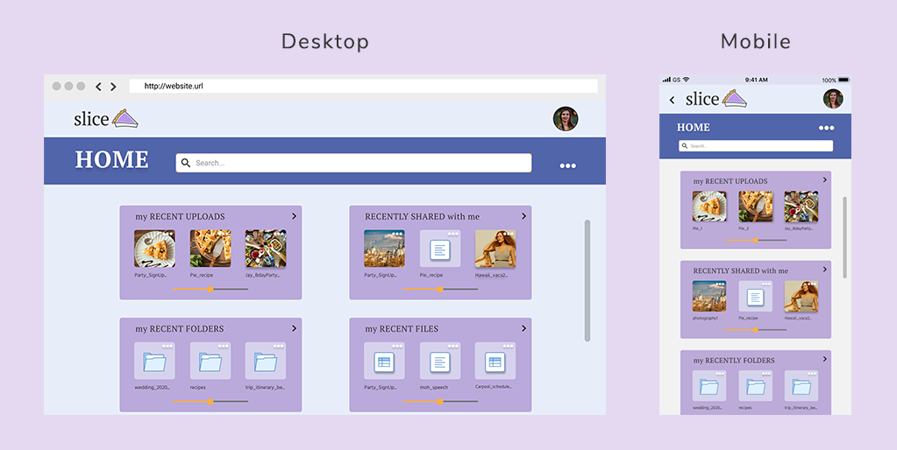

Problem
I was enlisted to create a new competitor in the growing Cloud App market. Overall, the main problem was how to put a fresh spin on a basic idea like cloud storage and somehow make it stand out from competition that had many of the same core functions. The product required all of the expected features of a cloud storage app (saving, uploading, organizing, and sharing content), while also providing something unique in order to draw the user in.
Solution
The end result, Slice, is a responsive app that allows users to share content directly with their social media accounts, as well as create folders which display items on a board-like interface. However, unlike some competitors, these boards are not limited to storing imagery. They can also accommodate documents and spreadsheets as well as visual content.
Discovery & Research
User Surveys
As a starting point, I conducted a user survey about user’s preferences and experience with Cloud Storage Apps. I asked questions that focused on their current experience with apps and what features they had difficulty using or felt were missing.
88.5% of users surveyed have used Google Drive and Drop Box. There were also a significant usage with Evernote, Pinterest and Box. Other apps such as OneDrive and Flickr appeared to be much more niche products, only receiving one response each.
84.6% of users surveyed selected “storing files” as a primary purpose for using a Cloud platform. 65.4% also selected “sharing files or a group of items with others.” “Backing up files” and “collaborating on documents” were also selected by over 50% of the participants. Of all the primary uses, the response that stood out as by far the least favorable was “organizing digital content” with a less than 20% recorded response rate.
Regarding preferences on organizing content, 76.9% of participants selected Folders, followed by Categories. Under 20% of users included both Tags and Groups as preferences.
Users surveyed were also more likely to use a Cloud platform on desktop than on mobile, although mobile was still significant. Based on these findings, I found it was important to create a responsive app that could work on both.
I found that users were likely to share content with friends on clous storage apps. This was especially skewed toward women.
Above is a word cloud I created with highlights from responses in my follow up interviews and short answer questions in the survey in regards to challenges user’s faced with Cloud Storage Apps. The key takeaways were issues with usability, organization, sharing and navigating between platforms.
Key Takeaways
I found that the majority of participants preferred folders to organize content which I later incorporated into my design. I also found that users were likely to use Cloud Storage Apps to share content with friends. This was especially skewed towards women.
Competitive Analysis
I looked at competitors, Evernote, Box, and Pinterest for my Competitve Analysis. I saw a stark contrast between apps like Evernote and Box, which are used in more professional settings and focus on content creation and file storage. Conversely, I found Pinterest presented itself as more of a social platform that focused soley on visual media. I saw an opportunity for an app with the file creation capacity of the former, with the more social interface of the latter where users could share content and inspiration with friends.


User Personas
Next, to develop a better understanding of my users, I created two target personas, both women and primary targets. I based there personas on insights I recieved during my user surveys and follow up interviews.
Bride-to-be-Becca
Age: 34
Location: Portland
Occupation: Art Director
View Full Persona

Basic Emily
Age: 24
Location: San Francisco
Occupation: Marketing
View Full Persona
User Stories
My User Stories are closely related to the problem and my insights from user research about collaborating and sharing content with friends.
- I want to share content with friends
- I want to save content
- I want to organize my content using folders
- I want to sign up for an account
- I want to upload files
- I want to create content such as documents & spreadsheets
User Flows
I drafted my User Flows so that all MVP actions could easily be completed through the main homepage.
Sitemap
I further developed how to make sure all core functions were accessible to the homepage with the sitemap.
Wireframes
Sketches
I used the insights I had gathered from my User Stories and User Flows to sketch out my initial wirefames.

Digital Wireframes
In the early stages, I went through several iterations of wireframes, trying to figure out the best use of space for layouts. The screenshots below show one of my earliest versions of the onboarding process. As I had previously outlined in my user flows, I designed my wireframes to make it so that all MVP actions could be completed easily through the homepage. My original wireframe sketches had a dashboard type view with modules that focus on the main functions rather than highlight recent activity. I was concerned that heavy imagery could be a distraction from an app with so many functions.
The screenshots below show one of my earliest versions of the dashboard and other MVP functions.
In this next round of edits, I opened up the space on the screen and reduced the space of the navigation bar on top of the app. I further developed the homepage by putting the links for the main user stories into a drop-down menu and focus the home page layout on content that the user has on their app.
Usability Testing 1
In this initial round of user testing, I tested for creating an account, uploading an image and organizing an image into a folder.
Key Takeaways
The main takaway from my first round of usability testing was that my prototype was missing some screens that would really help to show the app’s full functionality.
Changes From Testing
- Change Create Account CTA to just “creating an account with email” separate CTAs for FB or Twitter; not being obvious that there is a sign up via FB/Twitter option may discourage some users from signing up
- Edits to language such as changing “Sign In” to “Log In”
- Expanded space on screen for documents and spreadsheets
- Adding more variety of content to the homepage screen to to better highlight the multiple uses of the app
- Screens showing sharing of content, especially with social media sharing. I further developed them by adding additional screens for sharing options and added in a message preview section for social media sharing

Above are screenshots showing how I evolved the screen for the document page.
Here are screenshots showing how I further developed the social media sharing screens, adding steps to make the process feel more complete.
Here are the edits I made to the homepage/dashboard based on user feedback.

Here are the edits I made to the welcome page that the user sees if they have not logged in or have not yet created an account.
Visual Design
Branding
I wanted to create a brand that felt more fun and social to emphasize the purpose of it being an app to use with friends rather than a product targeted towards business use. To accompish this, I thought of imagery, ideas, and colors that represented friends coming together and collaborating for fun milestone events, holidays and trips.
Using techniques such as mind-mapping and other discovery exercises, I looked at three different branding ideas based around the app: having multiple purposes, being collaborative, or allowing friends to share content. The sketches of branding ideas I created focused on these features and gave the product a feel of a more social platform, rather than a platform used for business.
I then narrowed my focus to imagery and ideas that represented the idea of friends coming together and collaborating. I wanted to portray the feeling of friends planning a collaborative event such as a Friendsgiving. I thought of pie as something that friends share. I wanted to portray the idea that “slices” of inspiration on content can easily be shared with friends on the app, just like sharing a slice of a pie.
- BRAND CHARACTERISTICS
- Artisanal
- Friendly
- Creative
- Social
- Fresh
Color Palette
I used a split complementary color scheme with colors that felt more fun and friendly to fit with the brand.

Logo
To keep the focus on imagery and ideas of friends coming together, I thought of events such as Friendsgiving. I thought of pie as something that friends create and share. I wanted to portray the idea that “slices” of inspiring digital content can be easily shared with friends on the app, just like sharing pie.
Typography
I looked into the PT familiy and selected PT Sans fo the body copy because it ae off a creative retro feel without feeling dated. I used PT Serif for my logo design to compliment it.

High Fidelity
High Fidelity Mockups
As I transitioned my wireframes into high fidelity, I made edits to visually clean up the design and show a hierarchy. This is also the first verison where I developed seperate wirefrrames for both mobile and desktop. I used the insights I had gathered from my User Stories and User Flows to sketch out my initial wirefames.
Converting to Desktop
As I created a desktop version, I explored ways to keep the same look and feel as the mobile layouts while utilizing the extra space that the desktop layout allowed.
Preference Testing
For preference testing, I created 3 tests on Usability Hub to test different visual designs.
For this test 72%, of users preferred the purple header, 22% of users preferred the blue header and 0% preferred the yellow header. I can understand how users may have found the yellow header jarring compared to the colors on the rest of the screen. I got feedback that users selected both the purple and blue versions because they felt it was more harmonious. Another user commented that the blue was “easier on the eyes.”

For this test, Version 2 was the clear leader. 89% of users selected Version 2, while only 11% of users selected. Some highlights of the reasoning for choosing Version 2 included “Easier to see which column you are using for formulas,” and “I prefer the title to be at the very top of the sheet, and I like the way the cell labels are laid out.” The preferred version also is more compatible with UX design heuristics.
This was the closest of all of my tests. The 2 column layout) got 40% of the votes and the 1-column layout) got 60% of the votes. The reasons that were included for why a version was preferred focused on the use of space. Users who voted for each version commented that they felt the option they chose was a better use of space.
Hi-Fi Wireframes II
In this next round of wirefreames I incorporated the insights that I had recieved from preference testing. I also made some edits to clean up the design and better establish a hierarchy.
Additional Changes
I updated the mobile version of the homepage. After further consideration of desiging for small screens and looking at current design trends, I decided to minimize the amount of thumbnails that would fit on my mobile screen.
I also updated the buttons on the document page (pictured below) and spreadsheet page. Rather than having all buttons relating to editing the file being in a drop-down menu, I turned the buttons that were most import for the user to complete MVP tasks directly in the toolbar.
Usability Testing II
In this final round of user testing, I tested for creating an account, uploading an image, organizing an image into a folder, and creating a spreadsheet or document.

Key Takeaways
The main takaways from my second round of usability testing were about confusion with whether a viewer is on their own screen or that of a friend. I also got insights relating to the positioning of dropdown menus. After a round of revisions, I further tested an option for mobile with the main navigation being at the bottom so it was accessible by thumb.
Changes From Testing
- I updated my mockups to better show the difference between when a user is looking at their own content or a friends by having more prominant "share" button
- I compressed the amount of space for the top navigation to allow more real estate for the main content
- I moved the main dropdown menu from the bottom of the screen to the top
This visual shows the updates that I made to clarify whether the user is on a page of their own or on a friend’s page.
This visual shows the updates that I made to the homepage. The reasons that were included for why a version was preferred focused on the use of space. Users who voted for each version commented that they felt the option they chose was a better use of space.
The visual above shows the edits that I made to distinguish the options for the image edit menu and the overall app navigation.
This screen shows how I also further minimized the size of the header to allow more room for the main content.
This screen shows how I updated the aesthetics homepage for the desktop version to match the edits that I made to the mobile version.
Final
Conclusion
In conclusion, I found that the functionality of the app worked well and utilized recognizable design patterns. Some recurring patterns in feedback that I noticed related to use of space and sizing on mobile. I also noticed some feedback on using some UI elements that were unnecessary. After the approval of my high-fi wireframes, I made an additional change to help make better use of the space directly on the mobile screen. I have also enlarged the size of some of the buttons and removed the scroll bars that I now feel are not necessary after feedback.
I learned about maximizing screen real-estate for essential tasks and how important it is to have visual cues so the user know when things are scrollable.
If I had more time, I would have liked to further develop how to distinguish whose account the user is looking at. Perhaps I could add a trail of breadcrumbs above the image or folder.